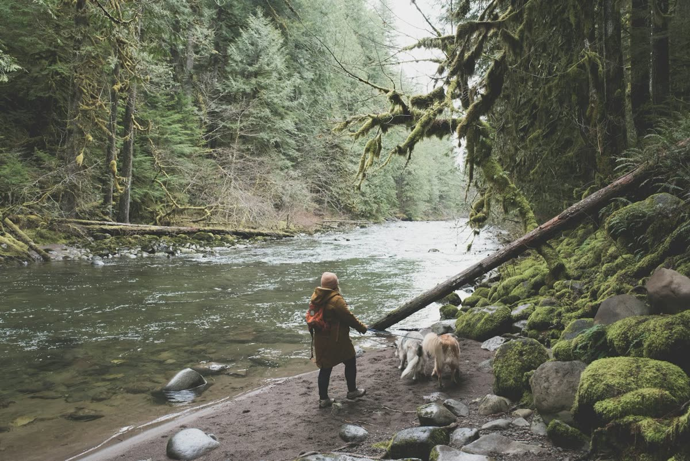
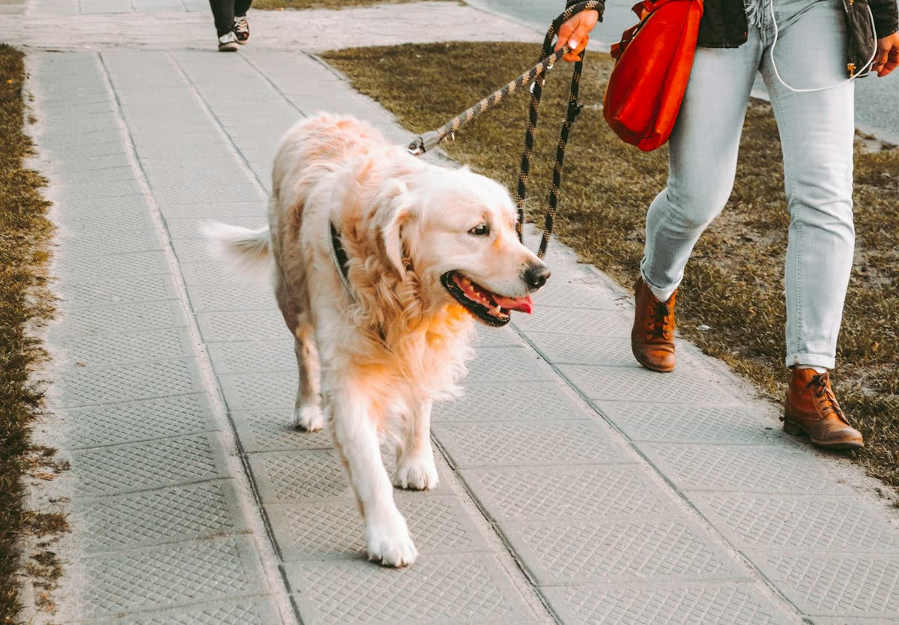
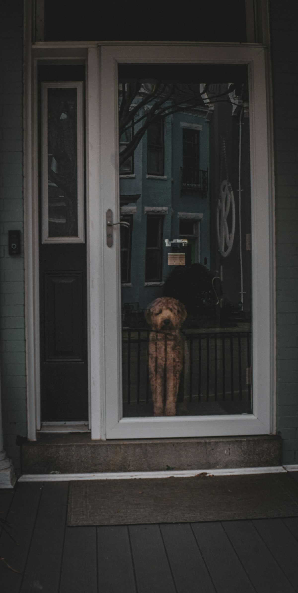
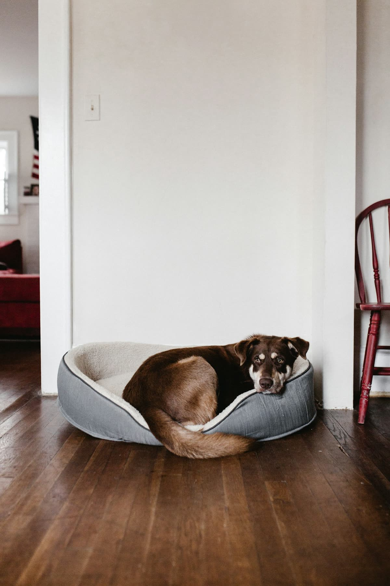
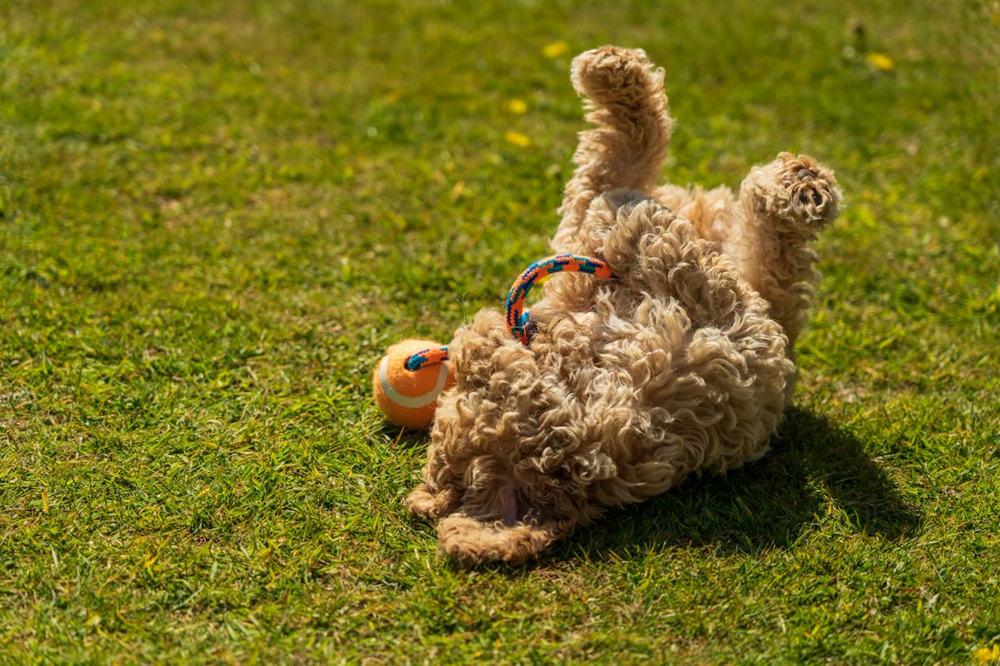
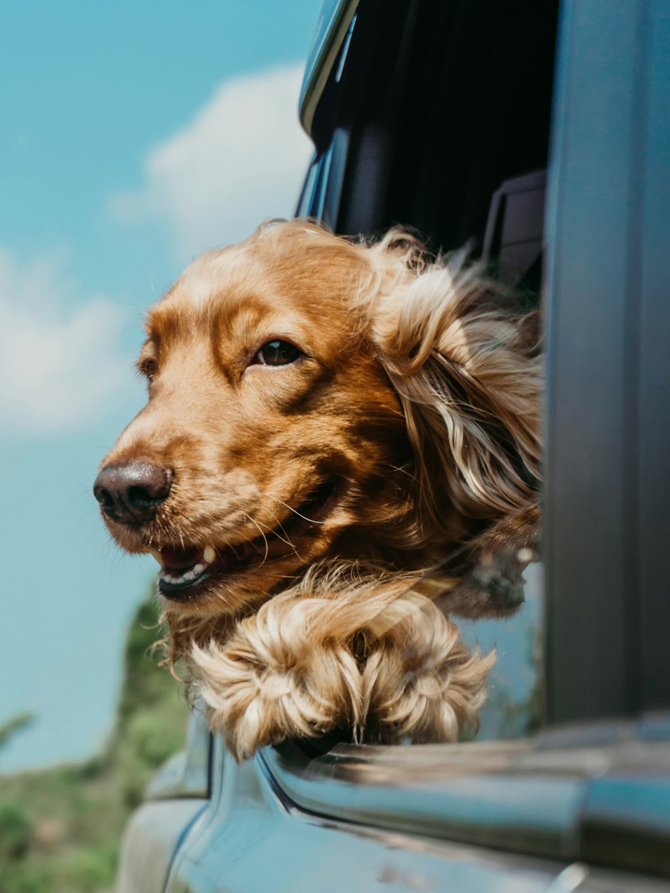
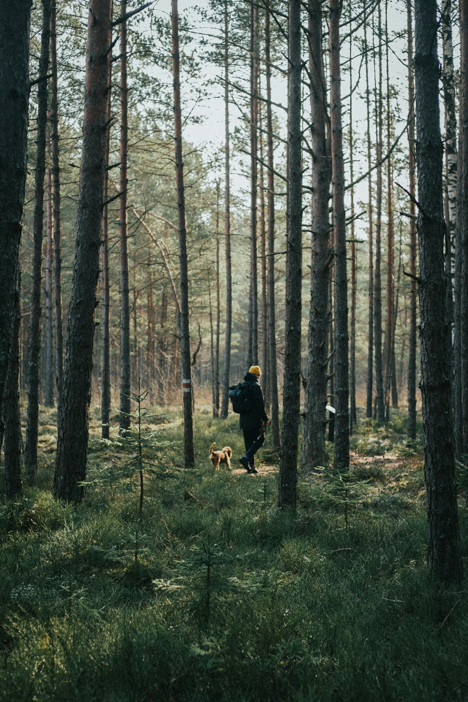

Dog walking & pet sitting in Churchill
A growing southwest neighborhood with family homes and green spaces. Chuck & Co. helps Churchill dogs stay active, settled and cared for while you are busy or away.
Churchill at a glance
- ZIP
- 97405
- Favorite spots
- Bertelsen Nature Park, the Fern Ridge Path
- Trail days
- the Fern Ridge Path and Ridgeline Trail system
- Start
- Free meet & greet

Walking dogs in Churchill
Nature-park loops and paved paths offer variety in all seasons. Some streets have limited sidewalks, so routes favor parks and paths.
Whether your dog needs a midday walk, a puppy break or company overnight, we tailor every visit to your dog and your block.
Questions from Churchill neighbors
Do you serve Churchill?
Yes. Churchill (97405) is part of our regular Eugene service area for all six services.
Where do you walk dogs in Churchill?
Common choices include Bertelsen Nature Park and the Fern Ridge Path. Nature-park loops and paved paths offer variety in all seasons.
Anything special about pet care in Churchill?
Some streets have limited sidewalks, so routes favor parks and paths.
Choose your care

01Dog Walking in Churchill
Neighborhood walks with the same familiar walker, rain or shine.
Learn more →
02Drop-In Visits in Churchill
Quick, thorough check-ins for potty breaks, meals, meds and play.
Learn more →
03Overnight Pet Sitting in Churchill
A trusted sitter stays in your home so your dog keeps their routine.
Learn more →
04Puppy Visits in Churchill
Potty breaks, meals, play and gentle reinforcement for growing pups.
Learn more →
05Pet Taxi in Churchill
Safe rides to the vet, groomer, daycare and back home.
Learn more →
06Adventure Hikes in Churchill
Leashed trail outings on Eugene’s best dog-friendly paths.
Learn more →Request care in Churchill
Tell us about your dog and what you need. We reply within one business day.
- Free, no-obligation meet & greet
- Locally owned in Eugene
- Photo updates after every visit